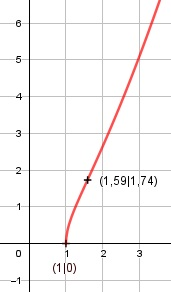

Aufgabe 132 f(x) = = (x3 - 1)0,5 Kettenregel erste Ableitung: f'(x) = 0,5 * 3x2 * (x3 - 1)-0,5 = f'(x) = 1,5x2 * (x3 - 1)-0,5 Produktregel zweite Ableitung: u = 1,5x2, u' = 3x v = (x3 - 1)-0,5 Kettenregel: v' = -0,5 * 3x2 * (x3 - 1)-1,5 v' = -1,5x2 * (x3 - 1)-1,5 f''(x) = 3x*(x3-1)-0,5 + (-1,5x2)*(x3-1)-1,5*1,5x2 f''(x) = 3x*(x3 - 1)-0,5 - 2,25x4*(x3 - 1)-1,5 3x 2,25x4 f''(x) = ------------ - ------------- (x3 - 1)0,5 (x3 - 1)1,5 1 2,25x4 f''(x) = ------------ * (3x - ----------) (x3 - 1)0,5 (x3 - 1) 1 3x4 - 3x - 2,25x4 = ----------- * ------------------- (x3 - 1)0,5 (x3 - 1) 0,75x4 - 3x f''(x) = -------------- (x3 - 1)1,5 Zur Beurteilung, ob f'''(x) ≠ 0: (Begründung siehe Aufgabe 105) u = 0,75x4 - 3x, u' = 3x3 - 3 u' 3x3 - 3 f'''(x) = --- = -------------- ≠ 0 für alle x > 1 v (x3 - 1,5)1,5 x3 - 1 muss ≥ 0 sein x3 - 1 ≥ 0 |+1 x3 ≥ 1 | x ≥ 1 Definitionsbereich: 1 ≤ x < ∞ wenn x ≥ 1, dann ist ≥ 0 Wertebereich: 0 ≤ f(x) < ∞ Symmetrie: f(-x) = f(-x) = ≠ f(x) --> keine Achsensymmetrie -f(-x) = - ≠ f(x) --> keine Punktsymmetrie Nullstellen: f(x) = 0 = 0 |2 x3 - 1 = 0 |+1 x3 = 1 | x = 1 N(1|0) Schnittpunkt mit der y-Achse: x = 0 f(x) = ≥ 0 --> kein Schnittpunkt Extrempunkte: f'(x) = 0 1,5x2 * (x3 - 1)-0,5 = 0 |:1,5x2 1 ------------ = 0| *(x3 - 1)0,5 (x3 - 1)-0,5 1 = 0 --> Widerspruch --> keine Extrempunkte Wendepunkte: f''(x) = 0 0,75x4 - 3x = 0 0,75x * (x3 - 4) = 0 0,75x = 0 | :0,75 x = 0 außerhalb des Definitionsbereiches x3 - 4 = 0 |+4 x3 = 4 | x = 1,59 f(1,59) = = 1,74 --> WP(1,59|1,74) Graph:
